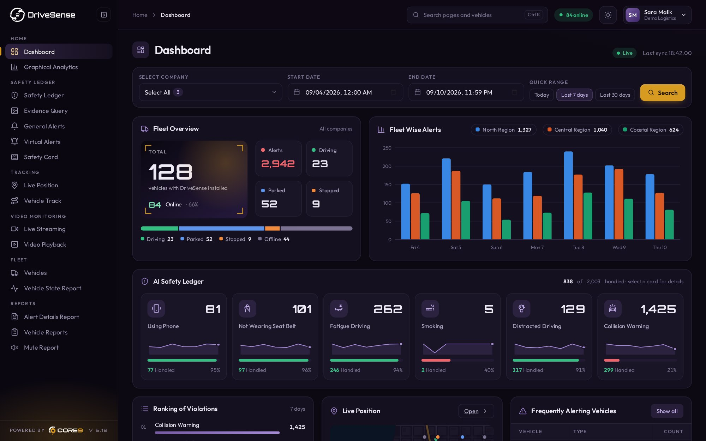

Know what every driver is doing before it costs you.
- Real-time detection of fatigue, distraction and phone use
- Driver alerts at the exact moment of risk
- Performance scoring across every driver and trip
Real-time driver monitoring and collision prediction, so incidents are prevented, not reported.
Four jobs, one platform: watch the driver, run the fleet, stop the incident, protect the cargo.
Live position, alerts and safety scores for the whole fleet, with the video evidence one click away.

Weekly incident reports reviewed after the fact
Real-time behaviour alerts while the driver is still on the road
Coaching conversations happen days after the behaviour
Driver feedback delivered in the moment it occurs
Fuel spend with no behavioural breakdown
Driver-level fuel visibility across every vehicle
Risk patterns discovered after an incident
Behaviour patterns surfaced before they cause a consequence
Control-tower teams reviewing everything manually
Automated alert filtering, so teams act on what matters
Detections across the driver, the road, the vehicle and compliance. Pick a category to see what DriveSense watches for.
What the driver is doing, flagged with the clip.
11 use casesHandheld phone use behind the wheel, flagged with the clip.
Unfastened seatbelt compliance, checked continuously.
Drowsiness signs detected before the driver loses the road.
Eyes off the road and prolonged inattention.
Smoking inside the vehicle, detected for policy and cargo rules.
A vehicle moving without a recognised assigned driver.
Hands off the wheel for food and drink while the vehicle is moving.
Early fatigue signs that come before eye closure.
Driver-facing lens covered, turned away or blocked during a trip.
Extra people in the vehicle against fleet policy.
A driver-triggered emergency alert with live location and footage.
What happens on the road around the vehicle.
13 use casesUnsafe following distance and closing speed on the vehicle ahead.
Abnormal manoeuvres logged with speed and location.
Speed-limit breaches measured against the road, not a fleet average.
Detection maintained through darkness, glare and tunnels.
Drifting across lane markings without a signalled lane change.
Stop signs and junctions taken without a full stop.
Crossing a signal after it turns red.
Vulnerable road users in the vehicle path, flagged in time to brake.
Following too closely for the current speed, measured in seconds of headway.
Aggressive take-offs and turns logged with speed and location.
Impacts detected automatically, with the clip uploaded before anyone calls it in.
Level crossings taken without the required stop.
Unsafe backing and U-turns in yards, depots and on the road.
Where the fuel, the hours and the vehicle go.
8 use casesIdle time and fuel burn tied to routes, shifts and drivers.
Trips that leave the planned route or corridor.
Engine and diagnostic faults surfaced before breakdown.
Waiting at gates, docks and customer sites, measured.
Stream the road and driver view from any vehicle during a trip.
Reefer and cargo temperature tracked, with alerts outside the set range.
Stops on hard shoulders, verges and unapproved locations.
Vehicle use by shift and route, for right-sizing the fleet.
The records insurers, auditors and regulators ask for.
7 use casesEntry or exit from yards, customer sites and restricted areas.
Unexpected door opening away from an authorised stop.
Hours, incidents and compliance records exported per period.
Out-of-hours use and unauthorised journeys.
Continuous driving time and missed rest breaks flagged against policy.
Every event scored per driver, with the clip ready for a coaching session.
Footage and trip data packaged for insurers, disputes and fines.
Core detections run on every connected vehicle from day one. Live video and temperature depend on the hardware fitted; thresholds are tuned to your fleet during the pilot.
See it on your fleetStill curious? We'll walk you through it on a short call.
Core9 develops artificial intelligence technologies that analyse video and operational data to help organisations monitor physical operations across fleets, warehouses and industrial environments. These systems detect operational risks, identify important events and generate insights that improve visibility across supply chain operations.
Core9 products connect to cameras, telematics devices and operational sensors across an organisation's physical infrastructure. AI models analyse these data streams continuously to detect events, identify anomalies and generate insights that help teams understand and manage operational activity.
Core9 products can monitor fleet operations, industrial environments, warehouses and distribution centres. By analysing video and operational data, the system shows how physical operations are running in real time.
Core9 products can connect to existing cameras, telematics devices and operational sensors, so organisations can deploy AI-based monitoring and analytics without replacing their hardware.
Insights into driver behaviour, operational risks, facility activity and supply chain operations — helping teams understand patterns, detect issues earlier and improve operational performance.
Initial deployments can typically be completed within a few weeks, depending on the scale of the environment. Many organisations begin with a pilot before expanding across fleets or facilities.
Smarter visibility. Faster decisions. Better control.